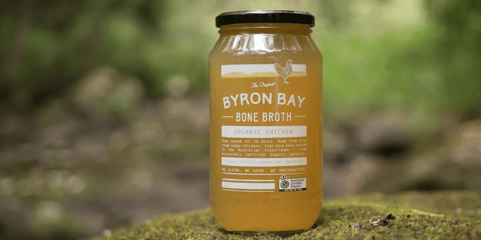
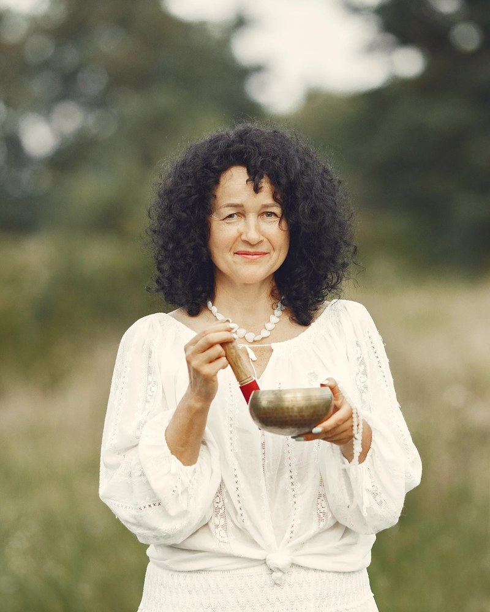
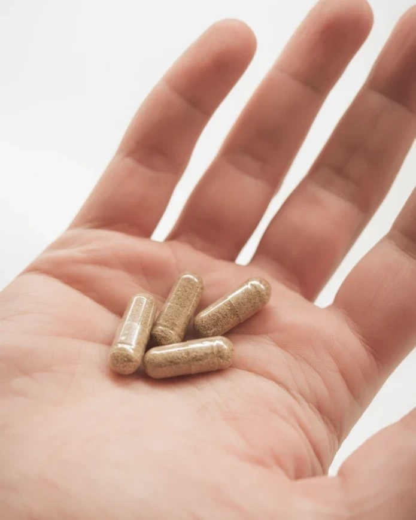
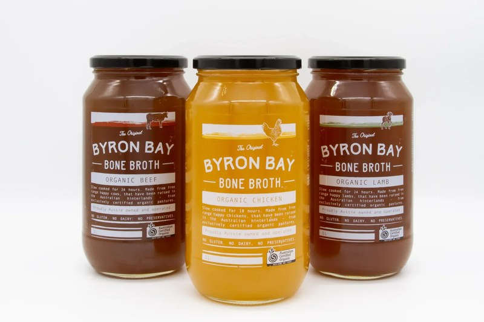
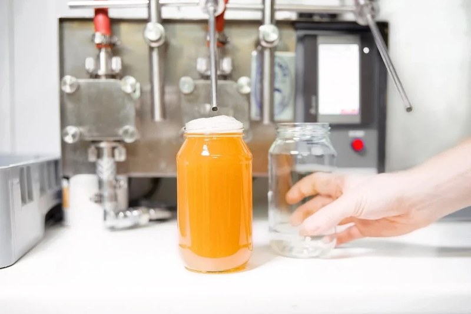
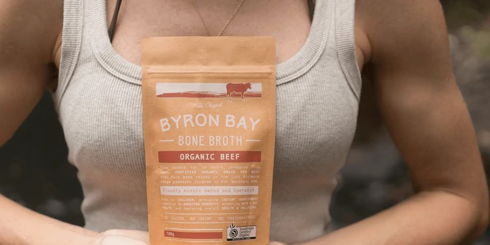
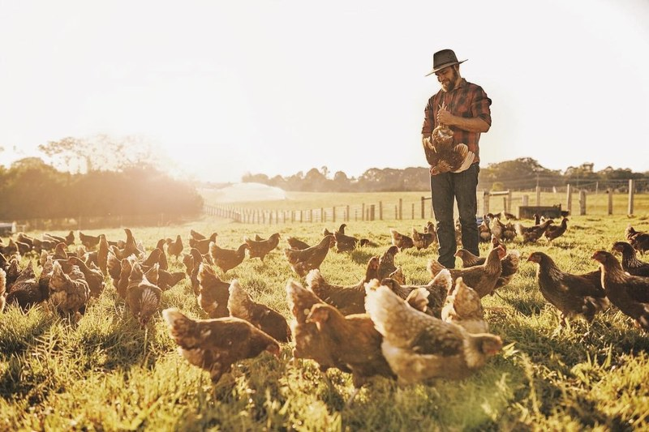
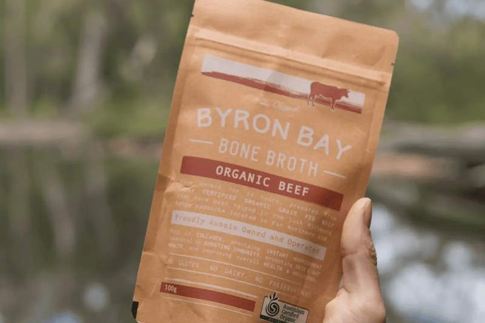

Byron Bay Bone Broth
Growing retail and practitioner channels, then rebuilding the customer journey online.

Context
Byron Bay Bone Broth was started by two chefs who believe in real food and local farming. Its slow-cooked broths and organic chicken liver capsules had a loyal following, but retail distribution was still small, with around 20 stockists.
Challenge
Shoppers, retailers and practitioners each needed something different, yet all of them saw the same story. High-intent customers weren't getting enough proof or clarity, particularly on the liver capsules, and the people best placed to recommend the products had little to help them do it.
Channel growth
Approach
Retailers and practitioners were treated as audiences in their own right. A practitioner programme gave naturopaths, clinics and studios tiered wholesale pricing with no lock-in, product education and clear guidelines for talking about the range.
Alongside it ran an ambassador programme, launch material for the chicken liver capsules, and B2B and B2C campaigns that carried the same provenance story from the farm to the shelf.


My role
- Client leadership across the channel programme
- Research into retail and practitioner partners
- Partner identification and introductions
- Strategic input on the practitioner and ambassador programmes
- Coordination of campaign and launch creative


Outcome
Over the engagement, the stockist network grew from around 20 to [figure to confirm] active stockists.
Digital experience
Approach
Customer research identified four audiences, from burnt-out millennials to strength-seeking midlife men. Their motivations differed, but each wanted simplicity, transparency and trust in a crowded supplement market.
The team mapped each audience's journey from awareness to advocacy, then organised the recommendations into four layers: trust, commerce, education and advocacy. A UX and conversion audit of the homepage, navigation, product pages and checkout turned this into a prioritised plan for the site.

My role
- Customer lifecycle and journey mapping
- Audience segmentation and customer research
- Channel-specific journey design and nurture logic
- UX and conversion audit across the site
- Prioritised digital experience recommendations


Outcome
The work gave the business one clear way of understanding its customers across direct, retail and practitioner channels, and a prioritised plan for turning curiosity into repeat purchase.